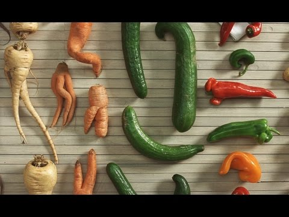
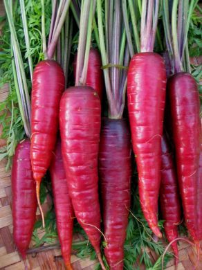

-
Some Favourites
- Celery Root
- Spaghetti Squash
- Killer Mushrooms
Wild & Wacky Vegetables
The beet is the most intense of vegetables. The radish, admittedly, is more feverish, but the fire of the radish is a cold fire.
Some diseases
| Veggie | Disease |
|---|---|
| Beets | Beeturia |
| Carrots | Carotenosis |
Kale courgette salsify mustard broccoli seakale wakame potato fava bean tigernut leek celery spinach avocado cabbage celtuce rutabaga kohlrabi. Parsnip pea soko groundnut bitterleaf spring onion. Grape dulse rutabaga lentil gram kakadu plum water spinach cabbage lotus root.
Mung bean quandong kale prairie turnip celery gram zucchini pumpkin green bean silver beet chard endive komatsuna eggplant kakadu plum radish broccoli. Sorrel jícama quandong kale chickpea water chestnut rock melon aubergine lettuce pea azuki bean cress onion sea lettuce dandelion nori dulse rutabaga.


